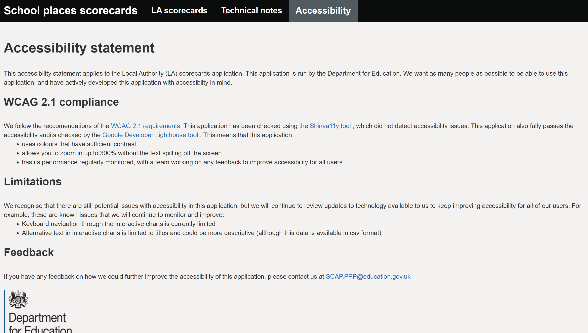
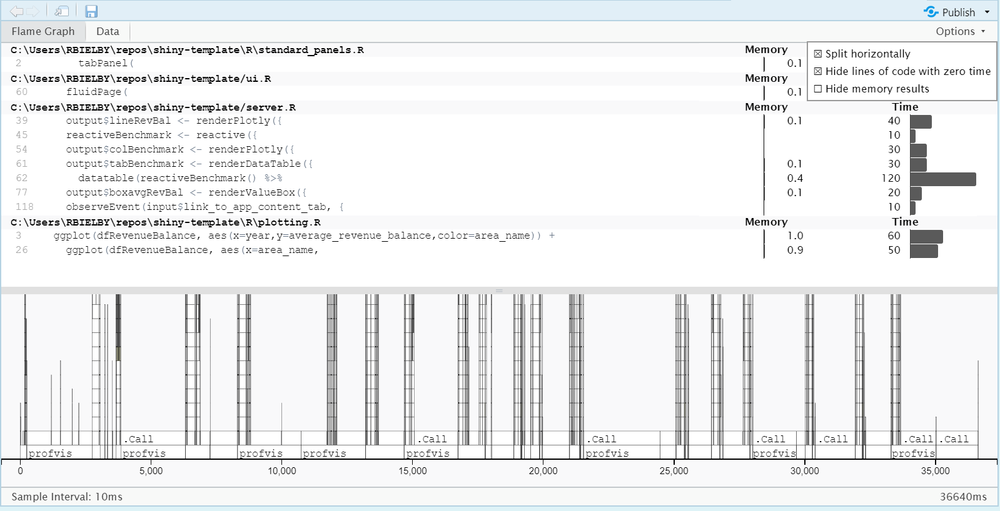
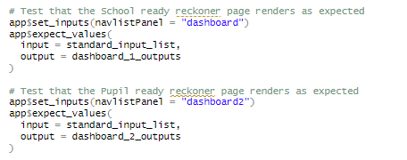
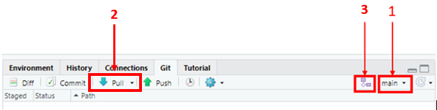

Public dashboards
Guidance for publishing public statistics dashboards
When to use a dashboard
The primary route for publishing official statistics is via Explore Education Statistics (EES). In addition to publishing on EES, there may be times where you want to compliment official statistics with a dashboard. This may be to do a deeper piece of analysis for a specific user group, or to make use of functionality that isn’t available within the platform.
It is important that all dashboards should have a clear use case and reasoning for why they are required. If you are considering developing and publishing a dashboard, please get in touch with the Statistics Development Team who can advise and assist with the process, and make use of the teams channel to ask questions and share what you’re working on with other teams.
This guidance is aimed primarily at dashboards published to supplement Official Statistics to the wider public. See the how to publish an R shiny dashboard section below for more information on the guidance for internal only R Shiny dashboards, or public facing R Shiny dashboards via shinyapps.io.
This page includes specific guidance for R Shiny dashboards, for teams using PowerBI, the department has a set of PowerBI dashboard standards that can be found on the DfE’s analytical services GitHub area.
There is also a dashboards version of the content design checklist. This checklist runs through a number of things to think about when developing dashboards to compliment official statistics and is worth using to design and also review any dashboards you own - Dashboards checklist (.xlsx). We also have a dashboard procedure checklist in this guidance page that outlines the steps required to set up an R shiny dashboard.
Things to consider
All dashboards should have a clear use case and reasoning for why they are required. They also need to meet the latest accessibility regulations for public sector services.
Dashboards, along with the Official Statistics that they supplement, are a digital service that we provide, and we should ensure we follow the Service Standard. The standard covers a number of aspects that all producers should be considering when developing a dashboard, and strongly influence the guidance on this page.
All data must be published on EES as open CSV files so that it is accessible in one place and we are not publishing anything new via dashboards.
When published, dashboards can be directed to from existing EES releases using the related links at the top right of a release page, or by being included as a url anywhere in the release content.
The following sections cover the considerations in more detail, though when developing a dashboard you need to commit to thinking about:
- User needs
- Software - long term sustainability, knowledge and resource
- Accessibility guidance
- Consistent styling
- User engagement and analytics
User needs
When designing a government service, always start by learning about the people who will use it. If you do not understand who they are or what they need from your service, you cannot build the right thing.
Understanding as much of the context as possible gives you the best chance of meeting users’ needs in a simple and cost effective way.
The real problem might not be the one you originally thought needed solving. Testing your assumptions early and often reduces the risk of building the wrong thing.
Services designed around users and their needs:
- are more likely to be used
- help more people get the right outcome for them - and so achieve their policy intent
- cost less to operate by reducing time and money spent on resolving problems
See the service manual for more information on learning about your users and their needs.
Software choices
When you make a decision about technology, you’re making a significant investment. The choices you make will have a huge impact on your ability to create, iterate and operate the service in a sustainable way. We should be choosing tools and technology that let us create a high quality service in a cost effective way and minimise the cost of changing direction in future.
For public facing dashboards we recommended using R Shiny.
We feel that it best meets the service standards, it aligns with the departments RAP strategy for the use of R in in Official Statistics, and the general direction of the government analytical community.
R Shiny is incredibly customisable, and ideal for providing everything in one place - interactivity, user customised printable PDFs (replacing old mail merge solutions), and ease of use on a phone!
R Shiny takes advantage of transferable knowledge and shared resources that already exist to minimise the costs and maximise the shared benefits.
While we recommend R Shiny, teams may use other tools if it can be justified against the Service Standard 11. Choose the right tools and technology.
The most common dashboard options available to us are:
- R Shiny
- Python Dash (or other Python-based alternatives)
- PowerBI
Some considerations to think about when choosing the tooling / software for a dashboard:
- will it be open source? (Service standards 12 and 13)
- what skills do your team already have, or are already developing?
- can you reuse anything that someone else has already done?
- do you have flexibility in formatting and styling?
- will you be able to maintain it long term?
- does it give the flexibility required to meet accessibility requirements?
- what costs will it involve? (Consider learning and development time and courses as well as hosting)
- will it allow you to develop automated testing and CI to QA our dashboards?
- does it align with the AF expectation to move towards R and Python for analysis?
The guidance on this page will focus on R Shiny. However, if you are using PowerBI you should also make use of the department’s PowerBI Dashboard standards, and aim to make use of reusable configurations where possible to ensure that duplication of effort across the department is minimised.
Accessibility
Government services must work for everyone who needs to use them. Public sector organisations have a legal duty to consider everyone’s needs when they’re designing and delivering services. Making a website or mobile app accessible means making sure it can be used by as many people as possible. This includes those with:
- impaired vision
- motor difficulties
- cognitive impairments or learning disabilities
- deafness or impaired hearing
Accessibility means more than putting things online. It means making your content and design clear and simple enough so that most people can use it without needing to adapt it, while supporting those who do need to adapt things.
The accessibility regulations came into force for public sector bodies on 23 September 2018. They say you must make your website or mobile app more accessible by making it ‘perceivable, operable, understandable and robust’. The full name of the accessibility regulations is the Public Sector Bodies (Websites and Mobile Applications) (No. 2) Accessibility Regulations 2018. The accessibility regulations build on your existing obligations to people who have a disability under the Equality Act 2010 (or the Disability Discrimination Act 1995 in Northern Ireland).
These regulations apply to all dashboards created for Official statistics. All dashboards should:
- have an accessibility statement
- follow the guidance below for testing against WCAG 2.1 AA accessibility standard
- use open data that is already available via EES
Analysts should familiarise themselves with the gov.uk guidance on service accessibility
Governance
All teams developing dashboards to accompany Official Statistics should contact the Statistics Development Team for advice on the level of approval required as there may be times when HoP approval is needed in addition to team/unit leader approval. Approvals should be sent to the Statistics Development Team when asking for a new dashboard to be hosted on shinyapps.io.
The standards for dashboards, and department strategy are maintained by the Central Statistics Standards Unit and governed by the Statistics Leadership Group, which is made up of all senior statisticians owning Official Statistics publications in the department.
Regular reflection on how teams are doing and finding ways to improve is an important part of good governance. We recommend that Senior Statisticians responsible for dashboards ensure that they are regularly reviewed, covering:
- testing and quality assurance
- accessibility
- performance against user needs
- overall coherence with central standards and strategy found on this page
Iterative development
Using agile methods means getting your service in front of real users as soon as possible. Then observing and generating data on how they use it and iterating the service based on what you’ve learned. Because you’re not specifying everything up front before you’ve developed an understanding of what users need, agile methods reduce the risk of delivering the wrong thing.
Teams should aim to get a working version of their dashboard out to users as soon as possible to prototype the design and content.
Iteration isn’t just for the early stages of a service’s development and services are never ‘finished’. Using agile methods means getting real people using your service as early as possible. Then making improvements throughout the lifetime of the service.
Making improvements means more than doing basic maintenance like fixing bugs in code, deploying security patches and keeping call centre scripts up to date. If that’s all you do, you’ll be fixing symptoms rather than underlying problems. And over time, the service will stop meeting user needs.
Continuous improvement means you can respond to changes in user needs, technology or government policy throughout the lifetime of the service. So rather than having to be replaced, the service stays relevant until it’s ready to be retired.
Code testing
Testing is a way to capture desired behaviour of your code, in such a way that you can automatically verify that it keeps working the way you expect over time. It is essential for making sure that code works the way that you intend it to, and keeps working even after you make changes to the code so that your users have access to a stable service. You need to test your service regularly as part of quality assurance (QA) to make sure that it:
- is easy to use for anyone who needs to use it, regardless of the device they’re using
- is stable, secure and works quickly, regardless of how many people need to use it
- can be iterated quickly to meet changes to user needs or the political environment
Tests can come in a variety of shapes and sizes, good starting points for analysts new to testing are the Duck Book, and DfE good code practice.
You should aim to automate as much of your testing as possible and run your test suite as part of continuous integration (where your tests form part of your codebase). By testing your code automatically every time you make a change, you’ll be able to find defects more quickly. Getting fast feedback means you can respond to any problems quickly and make changes when you need to. You can also spot defects before they develop into bigger problems that are more complicated and expensive to fix.
For dashboards created in R Shiny, we strongly recommend a mix of unit tests and UI tests (integration), run using GitHub Actions for continuous integration (CI). All applications should have an appropriate level of test coverage before being published. More information and details on how to get started with this can be found in the testing R Shiny section below.
Assessing engagement
Work out what success looks like for your service and identify metrics which will tell you what’s working and what can be improved, combined with user research. For dashboards this will likely be things like the number of users and interactions with what you have created.
Defining what “good” looks like and identifying appropriate metrics means that you’ll know whether the service is solving the problem that it’s meant to solve.
Collecting the right engagement data means you’ll be alerted to potential problems with your service. And when you make a change to the service, you’ll be able to tell whether it had the effect you expected. In practice this will often mean setting up analytics and feedback surveys for dashboards and monitoring the data you get back.
At a minumum you should be requesting feedback from users via a survey hosted on the dashboard and reviewing this on a regular basis. An example of this kind of feedback survey is the beta banner survey on Explore Education Statistics.

Google Analytics is a free service that collects information on who visits your webpage and how they interact with it. You can set up basic Google Analytics for your published dashboard in a few simple steps outlined in this article: Add Google Analytics to a Shiny app and view a more complex example in this example file. If you’re planning to publish a dashboard, or to set up Google Analytics for a published dashboard, please contact statistics.development@education.gov.uk.
Peer review
Peer review is a quality assurance activity, where an analyst other than the original author, views and tests the usage of a product or specific piece of code. This allows a fresh pair of eyes to take a look at your work. It validates that you have taken a correct approach and may highlight errors. This constructive feedback helps you to improve the quality. It provides confidence in your work, and ensures that it is fit for purpose.
- Dashboards must always be peer reviewed within the team they are created.
- Dashboards should also be peer reviewed by analysts outside of the subject area of the team.
The Central Statistics Unit has a number of analysts experience with R Shiny dashboards and are happy to review any dashboards created, contact statistcs.development@education.gov.uk if you’re interested in this. For more guidance on how to peer review, see the peer review section of the Duck Book.
How to publish an R Shiny dashboard
How you choose to publish your R Shiny application will depend on the type of access you require for it.
Internal only dashboards
It’s possible to publish dashboards that are only accessible to those on DfE kit, to do this you will need to publish via the departments RSConnect servers.
You will need:
- A finished app, in line with the guidance on this page
- The code to be in a Git repository in the dfe-gov-uk Azure DevOps space
To publish the app, you’ll need to set up a pipeline in Azure DevOps, guidance for how to do this can be found in the R community teams area.
Access to applications on RSConnect are locked down by default, once the pipeline is set up and you’ve deployed the app you’ll need to request for its access to be opened up by using an RSConnect request on ServiceNow.
If you’re running the app from an internal database, you’ll need to contact the database owner to set up a local login, and then store those as variables against your specific app in rsconnect. You can raise a request to do this via ServiceNow and selecting ‘Change app variables’.
Public dashboards
The majority of dashboards made to support and augment our Official Statistics will be public facing. For public facing shiny apps you should publish via shinyapps.io. The statistics development team manage a subscription for this and can help you get set up.
You will need:
- A finished app that meets the accessibility and styling standards (see our Dashboard procedure checklist)
- Code in the dfe-analytical-services GitHub repo
- Approval from your DD
- If the data underlying the dashboard is currently unpublished, you will need to create dummy data to use in GitHub until the data becomes published (see dummy data guidance section).
To set up a new app, send the above to statistics.development@education.gov.uk. If your code is not yet hosted in the dfe-analytical-services area you can request for the repository to be moved at the same time as sending approvals.
Dummy data
When creating a public dashboard, all code and data will be hosted in the dfe-analytical-services GitHub repo. This is a public repo, meaning anything stored in here is publicly available. Therefore if you are creating a dashboard with previously unpublished data, you should provide dummy data for the GitHub repo, and only add the real data on your publication date.
Your dummy data should:
- Use the exact same structure and variable names as your real data
- Use random values in place of real values (one example of how to do this is using the
rnorm()function) - Simulate the types of suppression, missing data or anomalies seen in your real data, to ensure the dashboard can account for these.
Testing with unpublished data
While you must use dummy data in your GitHub repo, it is understandable that we should test the dashboard works with the real data before it goes live.
This can be done using the .gitignore file alongside the datafiles_log.csv and commit hooks explained in the Stopping accidental data uploads guidance. You can view the example files our template repository.
The .gitignore file is a plain text file that tells git to ignore specified files in commits and pushes to the repo. Therefore, the first step when wanting to test unpublished data in a dashboard is to add the unpublished data file names to the .gitignore file.
Adding the file name alone will ensure it is ignored no matter where in the project area you save it (i.e. in any folder). Once this is done, you can add your unpublished data file to your local area, run the app locally, and make edits/commits without uploading the data to Github.
This .GitIgnore guidance page has great guidance on how you can utilize wildcards to capture all the files you might want to ignore.
If you have any questions on this process please do contact us at statistics.development@education.gov.uk.
R Shiny
Shiny is an R package that makes it easy to build interactive web apps straight from R. You can host standalone apps on a webpage, embed them in R Markdown documents or build dashboards. You can also extend your Shiny apps with CSS themes, htmlwidgets, and JavaScript actions.
The guidance on this page assumes you have prior knowledge of R, if you are new to R, then take a look at our R resources page to get started.
How to start
There are a lot of resources already available to support you when working with R Shiny, if you’re new, then this blog post provides a gentle introduction.
Our template shiny app repository is a useful starting point for all public facing dashboards in the department. Please see the dashboard template section for guidance on what the dashboard template includes and how to use it.
For more advanced shiny knowledge it’s worth taking a look at the guide to engineering production-grade shiny apps.
Finally, you should seek to make use of the community that is already out there, see what others are doing, ask them questions and for advice on any decisions or problems that you’re facing, and share what it is that you’re doing. - The Statistics Development Team are experienced with R Shiny and happy to help or offer advice, and there is the DfE R community on teams. - There is a bank of tips and tricks stored in the DfE R teams area too. - Going beyond DfE there’s a wealth of resources and communities online, including Stack Overflow discussions, cross government slack channels (e.g. #R and #Shiny on govdatascience.slack.com) and even tweets about R Shiny on twitter.
Dashboard procedure checklist
This checklist outlines the standard procedure for teams who are wishing to produce a public R shiny dashboard.
Getting set up:
- Create an account on GitHub
- Ask the Statistics Deveopment Team to create you a repository in the DfE analytical services area, providing the name of the dashboard and the GitHub accounts of anyone who will be contributing to the code. You should aim to have two analysts working on the code development and a line manager for review purposes. Further colleagues with review responsibilities (policy colleagues, G6 and above, etc.) can be given access to a demo-site, rather than the repository (see guidance for this below in ‘Setting up a development/demo dashboard area’).
- Clone the repo to your device so you can develop your code. Open the repo page in GitHub, click the green ‘Code’ button, and copy the URL it provides. Then, open R Studio on your device, click file > new project > version control > git, paste the repository URL you copied from GitHub, give your local project area a name, and choose where to save it (i.e. on your computer’s C: drive, outside of the OneDrive-synced folders).
Once you’re set up, there are certain parts of the code you need to update:
- In the global.R script, update all of the site URL’s and EES publication names to your own.
- In the ui.R script, update the tags$title(), the information in the meta_general(), and the secondary text in shinyGovstyle::header().
- Got to the .github > workflows folder, and open the deploy-shiny.yaml file. At the bottom, update the appName in rsconnect::deployApp() - this is what will appear in the URLs (i.e. must align with the links in global).
- Update the ‘Support and feedback’ tab (in R > standard_panels.R) with your teams information. We also recommend creating a feedback form for users of your dashboard, and adding a link to that on this page.
- Update the README.md file (you can do this easily directly in GitHub). This is the file that renders below your repo in GitHub for users to see.
- Begin adding your own dashboard content. If you copy and paste any parts of the code (i.e. to create new tabs) you must change all of the IDs so there are no repeated IDs in the UI, otherwise the app will run with no UI elements. You should add UI and unit tests as you develop your code as a form of automated QA (see our guidance on UI tests and guidance on unit tests).
You must contact the statistics development team for the following:
- To add the shinyapps.io secret and token to your GitHub repo, therefore enabling the app to be hosted on shinyapps.io.
- To create an area for your team in Google Analytics, to track the user analytics of your dashboard.
Setting up a development/demo dashboard area:
- While developing your dashboard, you may want a private, demo-version to share with policy or senior colleagues for review and feedback. This version must use either published data or dummy data and can not use unpublished data, since this cannot be uploaded to GitHub until the day of publication (see our dummy data guidance for public dashboards).
- Ensure that prior to contacting the statistics development team, you have updated all of the URL’s and other items listed above.
- You must contact the Statistics Deveopment Team to add the shinyapps.io secret and token to your GitHub repo, therefore enabling the app to be hosted on shinyapps.io. Once this is done you will have a browser link you can use to access the dashboard. We can make this private such that there is a list of approved viewers who must log in to view the dashboard - please provide the email addresses of any colleagues who you wish to have access to the private version during development.
You must have done the following before a dashboard can be published (the statistics development team must review and approve that these have been met):
- Accessibility testing the dashboard and updating the accessibility statement. The accessibility testing guidance later in this section outlines how teams can do this.
- You should test how your dashboard appears and performs on mobile devices. you can do this by opening your dashboard in chrome/edge, right clicking anywhere on the page and selecting ‘inspect’. you will then see a new panel on the right hand side of your screen. To see your dashboard how a mobile user would, click the mobile/tablet button (see the image below).

- Setting up UI and unit tests (UI tests are a part of the automated QA process and will run via GitHub actions each time you create a pull request). See our guidance on UI tests and guidance on unit tests.
- Performance testing your dashboard. See our guidance on performance testing.
- The underlying data for the dashboard must still be uploaded to EES in the tidy data format to be used in the table tool (check this using our data screener)
- Decide where you are going to provide the public the link to your dashboard. You can easily add a link to your EES publications. If you have a draft release that is going out on the same day as the dashboard, you can add the link into your EES draft while the shinyapps.io page is still private. This is because the link will not change when the dashboard is made public, the log-in screen will simply be removed.
Standards to follow
We expect all dashboards to follow a minimum set of standards to ensure coherence between our products and a minimum standard of quality for our end users.
These standards are constantly evolving, and all feedback and contributions are welcome, contact us at statistics.development@education.gov.uk.
Accessibility testing
In line with recent legislation for public sector websites, all dashboards need to meet the latest Web Content Accessibility Guidance.
As a minimum we expect all dashboards to be checked using the two tools below (lighthouse and shinya11y) and have an accessibility statement before being published.
Your statement should be written in line with the accessibility statement guidance, and you can make use of a template accessibility statement provided by .gov.uk.
Lighthouse in Google Chrome is an easy way to quickly rate your accessibility. Open your app in Chrome, right click anywhere on the page and select “Inspect”. From there, navigate to “Lighthouse” in the top grey bar, and click “Generate report”. This generates scores for accessibility, best practices and SEO for your application or web page:
To complement this, we recommend also using the shinya11y package to look at accessibility across your dashboard. Simply install and load the package, then include use_tota11y() at the top of your UI script. This brings up an interface that helps you examine different accessibility aspects in your app, like colour contrast, alt-text and what screen readers will detect:

Automated tools can’t check for everything and there’s no substitute for giving your dashboard a manual check. You should consider what users need from your dashboard and ensure that that information is accessible to all. For example, can someone using a screen reader get the same information as you can see on the screen from a downloadable csv or from the alt text that you have provided? Everything that you can see, you should also be able to read with a screen reader. Use the Edge narrator tool to test out how your dashboard works in practice.
One example of a dashboard for Official statistics that meets these regulations is the SCAP LA school places scorecards app. Their accessibility statement is clearly labelled, explains what checks have been carried out, what the known limitations are and the plans in place to fix them:

Styling
All dashboards should have a link to the source code, and information about who to contact for feedback/issues. You should be familiar with and follow the gov.uk style guide as appropriate.
Teams should pick from the gov.uk design system colours when creating dashboards. The style sheet in our template repository makes use of these colours, though this can be extended if needed to suit your needs. Be careful when choosing colours, and make sure that colours have sufficient contrast to be placed next to each other to meet WCAG AA standards using the colour contrast checker.
Charts using ggplot2 and plotly can take custom palettes using the scale_fill_manual() function, e.g. below:
# Create colour palette using recommended colours (based on gov.uk design system)
dfe_colours <- c(
"#12436D", #`blue`
"#F46A25",#`orange`
"#801650",#`maroon`
"#28A197" #`turquoise`
)
# Create chart using palette
ggplot(aes(y=value, x="",
fill = factor(rating),
text = paste(rating, ": ", value, "%"))) +
geom_bar(stat="identity", position = position_fill(reverse = TRUE))+
scale_fill_manual(values = dfe_colours)
Further examples are given on the Using Explore Education Statistics guidance page.
You can use in-line CSS to make these style changes, or make edits to the style sheet. Editing the style sheet is a neater solution if you want to apply changes across your app, and keeps your UI code clean. You can find out how styles are configured by running your app, right clicking and selecting “Inspect” to view the element you wish to change. You can then find these lines in the CSS stylesheet and change a number of things including fonts, font colours and background colours.
The SCAP LA school places scorecards app is one example of a public facing dashboard that meets these styling requirements.

Testing R Shiny
To ensure that they are reliable, dashboards should have an appropriate amount of automated tests before they can be published. We recommend using a mix of UI and unit tests, but the number and type of tests that you need to run will depend on the content of your application.
Further guidance on setting up testing can be found in the DfE good code practice guide. Also see our guidance on testing R code on the learning resources page.
Performance testing
Performance profiling represents a chance to breakdown how different elements within your dashboard perform relative to each other. This consists of running through a set of actions on a local run of your dashboard and timing each one. A useful tool for performing these tests is profvis, which carries out all the timings and visualisation of the results for you, whilst all you have to do is run the app and step through the actions that you want to profile.
The basic steps are as follows.
With your dashboard repository open in RStudio, run the following commands from the R console
install.packages("profvis")
profvis(shiny::runApp())
Then go through a set of interactions in your dashboard (e.g. navigate to the dashboard page, step through changing the selected choices in each input field, switch between any different tabs and cycle through the relevant inputs again). Once you’ve performed a representative range of actions in the dashboard, close the window and go back to the RStudio window.
After several seconds (depending on the range of actions you performed), a visualisation will appear in the main RStudio editor window showing the results of the profiling.
The profvis results are shown in the flame profiling chart. The top half of the chart shows any processing time measurements above 10ms for each line of code. It can be useful to focus in on lines that have measured times above 10ms by selecting “Hide lines of code with zero time” from the options menu in the top right.

Lines with timings of greater than about 5-100ms may warrant further investigation to see if they warrant some optimization. Common routes to optimising code are:
- avoid any data processing in server.R, e.g. avoid using the summarise() function;
- use reactive() elements to minimise repeated calls of given functions;
- use memoise() to cache results of more intensive functions (e.g. ggplot) to minimise repeated calls.
The documentation for the profvis package can be found here: Profvis documentation
Whilst profvis can help identify any bottlenecks, this will ideally be complemented in the future by full load testing of dashboards, whereby the behaviour of dashboards under real-life high demand scenarios can be tested. However, this type of testing is unavailable whilst our applications are hosted on ShinyApps. We will offer support on load testing once we move dashboards on to our own server systems.
UI Tests
User interface (UI) tests should be used for all apps. These tests should check that:
- Your app loads up correctly
- Content appears as expected when you switch between tabs
- Content updates as expected when you change inputs
The shinytest package is a really easy way to create these tests on an RShiny app. Simply load in the package and run shinytest::recordTest() to open up the testing environment to get started.
Each test should produce one “expected results” JSON file. You can track particular elements of your app by holding CTRL and clicking on an element in the testing window.
For example, the SCAP LA school places scorecards app has tests that check that the app functions as expected when different combinations of filters are selected.
Each test is separated out by comments, clearly stating what is being tested. - app\(setInputs()** tells the UI test to select an input in the app - **app\)snapshot() tells the UI test which outputs to capture (i.e. which outputs you’d expect to change and want to test)

The expected outputs are saved in a UI_tests-expected folder, and every time you run a UI test, the outputs will be compared to these expected snapshots.
An example of a basic shiny test to check that your app loads up correctly can be found in our shiny template repo.
Unit Tests
Unit tests should be used for apps that contain custom functions created from scratch, or that rely on existing functions being combined to interact in a certain way.
Unit testing checks, for a set of defined variables, that the output is always the same when you run your custom function/s. This ensures that if slight tweaks are made to your function, or functions within packages you are using are updated, that your custom function still works.
For example, our QA app has many custom functions that we create to screen files before upload to EES. We have a series of dummy files that we have created to either pass or fail certain tests. Unit tests are written to check that these files always pass or fail as expected.
Tests and deployment
Both UI and unit tests need to be added to your app’s deployment pipeline. This ensures that the app will not be published if any of the tests fail.
We recommend using Github Actions to deploy the latest code whenever a push to your master branch occurs - this ensures that the published version of your app stays up to date.
You should also use GitHub Actions to run the automated tests for your app, which we recommend are done on at least every pull request.
If you’ve started from our template repository then all of this will be mostly set up for you to tweak and expand on, but if you haven’t then you’ll need to add the yaml files from the .github/workflows folder to your repository.
GitHub actions are already well documented and their own guidance should be able to walk you through anything you need. That being said, if there’s anything else you’d like to see here let us know.
Connecting to databases
We don’t yet have a database server set up that can be accessed by public facing dashboards, though we are working to put this in place. In the meantime, there a few alternative options for storing data that the dashboard can run off.
Store the data within the repo (e.g. CSV files in a /data folder). Note that only published data should be stored in a repo. If your working on a dashboard that uses unpublished data then please see the dummy data section for guidance.
Use Google sheets
Use Dropbox
If you are running an internal-only app then you can connect to our internal SQL servers, information on how to do this is in the R community teams area.
Secure variables
See our Git page for guidance on storing secure variables in repositories.
Publishing your dashboard
DfE Shiny applications are published via the DfE Analytical Services shinyapps.io account. You need to alert the statistics development team of any new dashboard publication as early in development as possible and keep us updated on expected publication date. Update the stats development team on any subsequent data or major functional updates to the dashboard publication at least a week prior to re-publishing with the update. Deploying to shinyapps requires the DfE platform codes to be entered into the repository secrets area of your app. This needs to be done by the stats development team. Authorisation of a publication should be requested from the relevant G6 or DD and the stats development team (with the former authorisation e-mail being forwarded on to the Statistics Deveopment Team).
If you are publishing a dashboard using already published data, then all of your code and data should be on GitHub. You may have decided to password-protect the dashboard URL, in which case, you should make the Statistics Deveopment Team aware of your publication date so that they can remove the password-protection at 9:30 on publication day, making the dashboard visible to the public.
If you are publishing a new dashboard for the first time that uses unpublished data, then you should have followed the guidance on using dummy data. This means that the unpublished data should not be added to GitHub until the day of publication. You should follow steps 1-9 in the below section on the day before and day of publication.
Be sure to read the guidance carefully, do not commit or push unpublished data to a GitHub repo before the day of the publication of the data. If you think you may have done this by accident, contact Statistics Deveopment Team immediately with the full details of what has been uploaded to GitHub and when.
Updating data in a dashboard
As mentioned in the public dashboards section, a public dashboard should not be updated with unpublished data until the data is published. However, it is possible to clone the repo and run it locally with unpublished data for testing purposes (see our guidance on testing with unpublished data). This guidance applies to both adding real data to a dashboard that previously used dummy data, and to adding updated data to an existing dashboard.
On the day prior to publication:
- Create a local branch which you will use to update the data. To do this open your local version of the repo, navigate to the Git window, ensure the current branch is main (see 1) as this is the code producing the current live version of the app. If you’re happy the current branch is main, then do a pull to ensure it is up-to-date (see 2). Then click the new branch button (see 3).

- Give your branch a descriptive name, for example, for a data update for publication on a given date, incorporate the date into the branch name (i.e. data_update_01Jan_2023). Click create.
- You can now add your unpublished data files to the data folder in your local copy of the repository (in the file explorer). If you have already added the data using .gitignore as described in the guidance on testing with unpublished data, you can now remove the file name from the .gitignore file. You can also remove any dummy data files or old data files from the folder.
- Now open the script that reads in data for your dashboard and edit the file paths to point at the new data files.
- run tidy_code() and run_tests_locally() (see guidance on UI tests). If changes are found when running the tests locally, make sure you look through these differences and understand them. If you are happy with the changes found in the tests (i.e. they are expected due to your updates), update the .json files. These are tested via GitHub actions every time you do a pull request, so you should always run them in advance of any pull request.
- You can run your app to test that it is working, but do not commit or push this branch yet.
On the day of publication:
- At 9:30 on publication day, commit and push the changes in your new branch to GitHub. This makes the data files publicly available via GitHub and so should not be done until 9:30 on the day of publication, however this step does not update the dashboard.
- On the GitHub repo, you should now see a prompt to open a pull request. You should do this, following the template, ticking the boxes to show you have completed tests locally as required and provide details of the changes (i.e. that you’ve updated to include the most recent data, including dates).
- As you have already completed tests locally (step 5), you do not have to wait for the tests to complete when you open the pull request, you can click to merge into main straight away. This should start the process of updating the data on the dashboard. You can view the progress and time taken to do this by opening the GitHub actions tab and looking at the shiny-deploy action. Once the shiny-deploy action is complete, the dashboard will have updated.
DfE Dashboard template
Our template shiny app repository should be used a starting point for all public facing dashboards as it gives a consistent set up for publishing and provides template code for common parts. You can start your own repository using the ‘Use this template’ green button on the template repository. You will need a GitHub account to do this. If you are unsure or need help, contact the Statistics Development team who will be able to walk you through this.
What’s in the template
The template provides code for a basic interactive dashboard, with an example line chart using drop-downs for education level and geographic levels. It also includes an example accessibility statement (this is a requirement for all public dashboards and must be filled in, see the Accessibility and Accessibility testing sections earlier in this guidance), and a ‘Support and feedback’ page with suggested contact information and links.
View the latest version of the template dashboard.
Google analytics
The template has a google_analytics.html file which is set up to track all basic metrics, plus the inputs from both drop-downs. To set this up with your own app you will need a new tracking tag (the long number in the gtag()) which the statistics development team can provide you with. Please contact us in order to set this up.
If you are hosting your dashboard at multiple URLs (i.e. to cope with expected high traffic) then all URLs will be tracked using one tracking tag and analytics for all URLs will all appear as one in the same report.
Data files log
The datafiles_log.csv file is a record of all of the data files saved in the repo, and whether or not the data is published. You should log all data files here and accurately record whether the data is published, unpublished or reference data.
Stopping accidental data uploads
If you see any of the following errors, it is because you are trying to commit a data file to the GitHub repo that hasn’t been recorded as published:
Error: data/test_data.csv is not recorded in datafiles_log.csv.
Error: data/test_data.csv is not logged as published or reference data in datafiles_log.csv and is not found in .gitignore.
The template uses commit hooks and a datafiles_log.csv file. Commit hooks run automatically whenever you try to commit changes, and prevent any unpublished data being uploaded to the GitHub repo (see the public dashboards and dummy data sections) by checking the datafiles_log.csv file.You should therefore record all data in the datafiles_log and record whether it is published, unpublished or reference dara. If you try to commit a file that is not recorded or is recorded as unpublished, git will not allow the commit. If you would like to save an unpublished data file locally to test the dashboard you should use the .gitignore file to ensure git ignores this file in your commits (see the testing with unpublished data guidance).